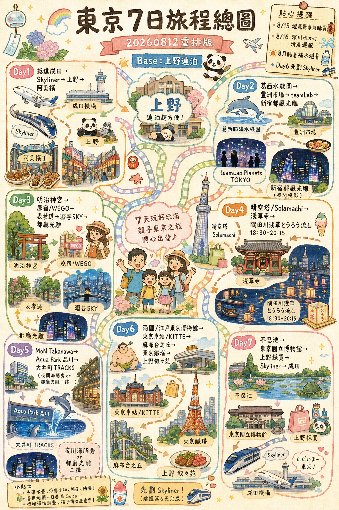
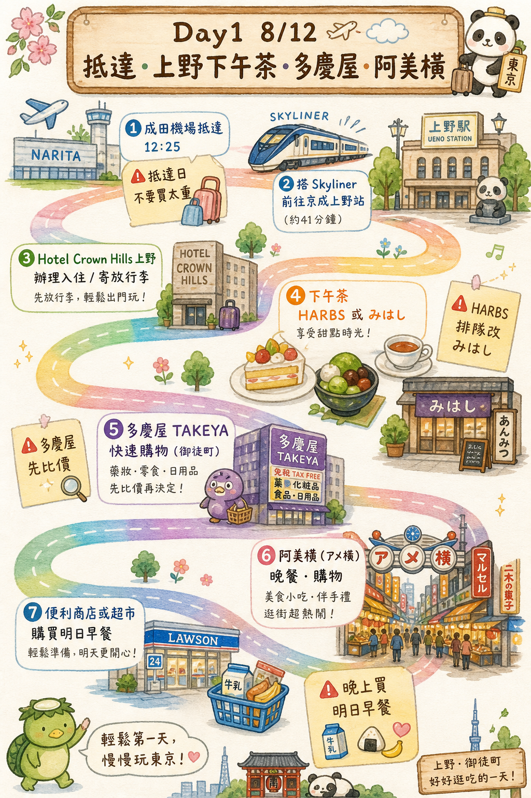
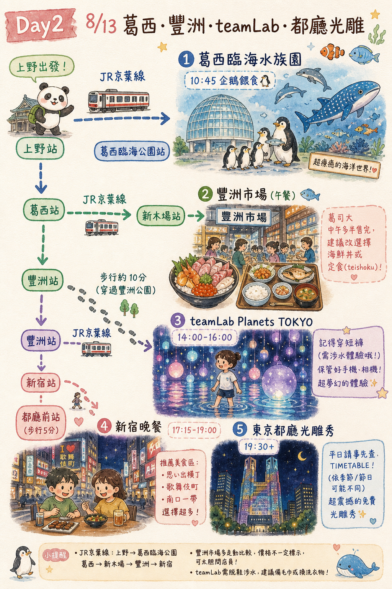
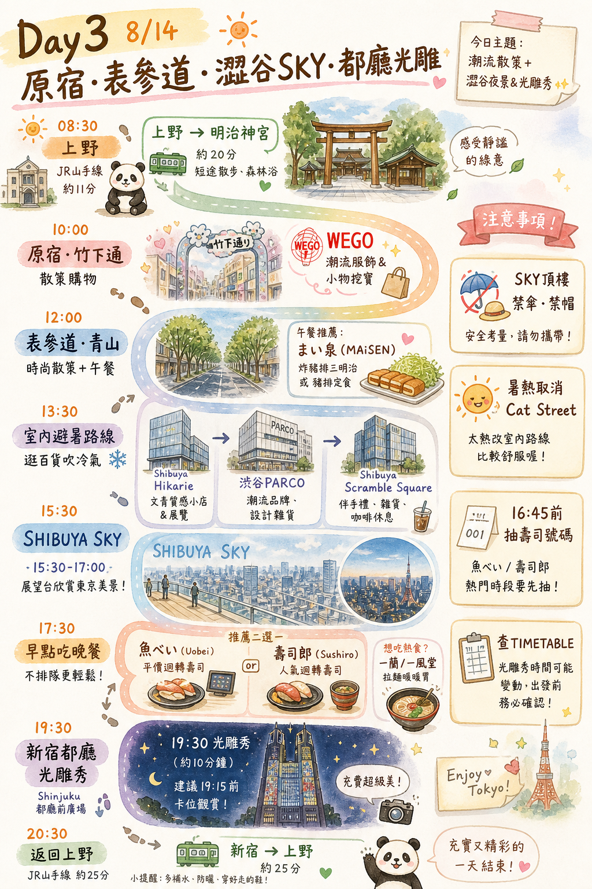
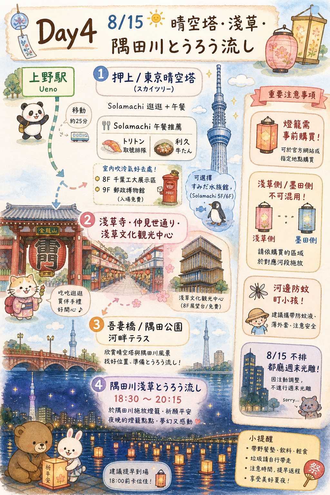
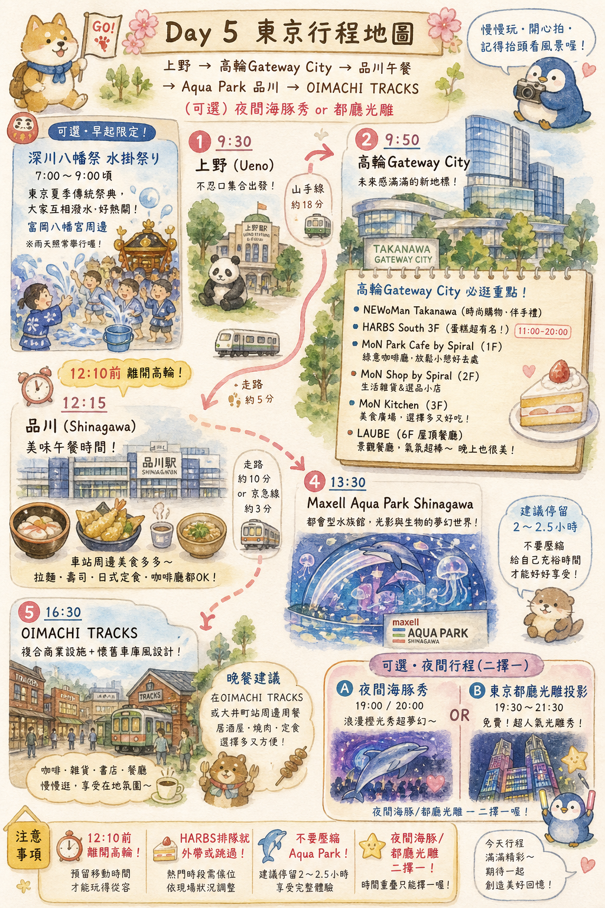
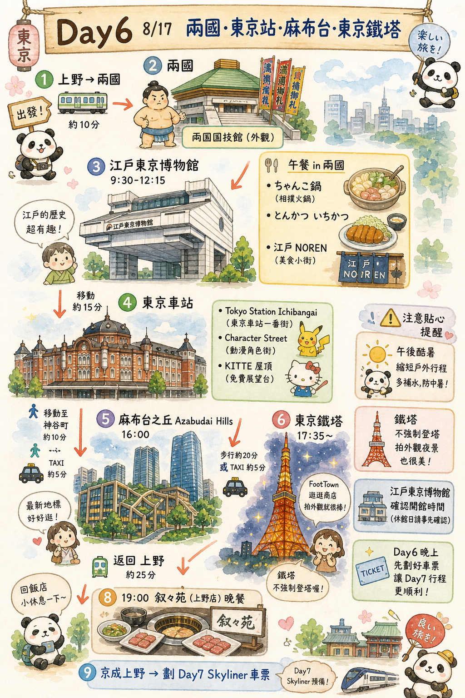
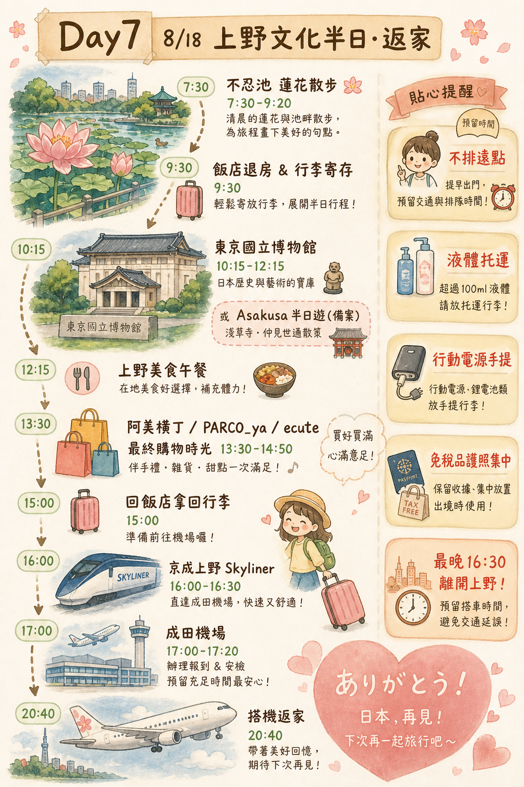

外出只要看這一節就好；遇到疑問再往下翻各日詳細說明。
2026 年日本入境主要走 Visit Japan Web（VJW）線上預先登錄，現場掃 QR 走電子通關最快。
※ 一家人可在同一帳號下建立多位同行家屬資料，小孩也要各自登錄。
| 票券 | 價格 | 使用範圍 | 本行程推薦? |
|---|---|---|---|
| Suica / PASMO（實體或 iPhone 綁定） | 儲值制，無票價；iPhone 綁定免押金，實體卡 ¥500 押金 | JR、地鐵、都營、私鐵、巴士、便利商店、自販機通通能嗶 | ✅ 主力，全程用它 |
| Welcome Suica（觀光客版） | 免押金、效期 28 天 | 同 Suica | ○ 沒 iPhone 綁卡時的實體替代 |
| 京成 Skyliner 來回票 | 來回約 ¥4,480（單程 ¥2,580；常有 Klook/KKday 折扣 ~¥4,300） | 京成上野 ⇄ 成田機場 直達 41 分 | ✅ 單獨買來回，最省機場往返時間 |
| JR Pass 全國版 | 7 日約 ¥50,000 | 全日本 JR | ❌ 沒跨城，完全浪費 |
| JR 東京都市地區通票（都區內 Pass） | ¥760/日 | 東京 23 區內 JR 普通車一日無限 | △ Day2／Day5／Day6 有較多 JR，但仍混地鐵／私鐵，整體不划算 |
| Tokyo Subway Ticket（24/48/72h） | ¥800 / ¥1,200 / ¥1,500 | 只含東京 Metro + 都營地鐵，不含 JR、不含私鐵 | △ 你 JR 用很兇，覆蓋不足；除非某天幾乎只搭地鐵（見 Day3 備案A/B） |
※ Skyliner 也可考慮「Skyliner + Tokyo Subway 24h 套票」，但你只有 Day3 偏地鐵，整體仍是 Suica 單嗶最彈性。
各日地鐵/JR 嗶卡實際花費（估，IC 票價，單位日圓/人）：
👉 若改買 Subway Ticket 72h（¥1,500），你 Day2／Day5／Day6 的 JR 段全不能用，仍要另付 JR。Suica 嗶卡 = 花多少算多少，最省。
7 日交通總計（含 Skyliner 來回）≈ ¥10,000–11,500 / 人（約 NT$2,100–2,400）
| 項目 | 提前多久 | 怎麼訂 | 備註 |
|---|---|---|---|
| 澀谷 SKY📍地圖（Day3） | 參觀日 28 天前日本時間 00:00 開賣 | 官網 / Klook / KKday | 為趕 19:30 光雕秀，改搶 15:30–16:00 場；17:00 前下樓吃早晚餐 |
| teamLab Planets 豐洲（Day2） | 至少 1 個月 | 官網 指定時段電子票 | 涉水體驗，穿短褲/可捲褲管；旺季易售完 |
| 墨田水族館（Day4 選配） | 若去再買；可省略 | 官網 / Klook | 主線可不去（Day2 葛西＋Day5 Aqua） |
| Aqua Park 品川（含夜間秀＋再入場）（Day5） | 建議出發前 | Klook / KKday / 官網 | 入園確認再入場規則 |
| MoN Takanawa（Day5） | 出發前查是否需時段 | 官方／園區網站 | 2026 新館，確認公休與票種 |
| 隅田川とうろう流し燈籠（Day4） | 盡早（網路約至 8/6–8/7） | 淺草／墨田官方通路 | 當日現場較貴且易完售；側別不可混用 |
| 江戶東京博物館（Day6） | 出發前確認 | 官網 | 確認開館／票價／預約 |
| 餐廳 | 哪天 | 訂位方式 | 最熱門時段 |
|---|---|---|---|
| 迴轉壽司 トリトン Solamachi | Day4 午餐 | 不訂位；10:45–11:00 前取號 | 約 11:00–12:30 |
| 邁泉炸豬排📍地圖 青山本店（まい泉） | Day3 午餐 | 官網 / TableCheck，提前 1–2 週；否則 11:00 前到排隊 | 11:30–13:00 |
| 味街道 五十三次（品川王子） | Day5 午餐備案 | Hot Pepper / 一休；怕利久排隊時改訂 | 11:30–13:00 |
| 焼肉陽山道 上野本店 | Day2／Day4 不排（光雕／燈籠）；可作 Day6 叙々苑備案 | Hot Pepper／一休 | 優先叙々苑 |
| 叙々苑 上野 | Day6 8/17(一) 晚餐（鐵塔後回上野） | Hot Pepper / 官網；先訂 | 19:00 |
| 焼肉陽山道 上野本店（備案） | 叙々苑訂不到時改 Day6 | 同上 Hot Pepper | 19:00 |
| 高輪格蘭王子 Lounge Momiji | Day5 雨天／低體力選配 | 官網 / 一休 | 14:00–16:00 |
| T.Y.HARBOR（天王洲） | Day5 午餐非主線選配 | 官網 / TableCheck | 午餐 12:00 |
| 迴轉壽司 壽司郎📍地圖 / 魚べい📍地圖（澀谷） | Day3 早晚餐（19:30 光雕秀前） | 官方 App 抽號（16:45 前抽）；排太久改博多風龍／美食街 | 17:15–18:15 |
共通策略：熱門午餐 開店前 15–30 分鐘到；晚餐 18:00 前入座較穩；帶小孩優先選連鎖定食/迴轉壽司/牛丼，翻桌快、不需訂位。

12:25 成田機場 T1/T2📍地圖 抵達，入境、領行李、過海關（VJW 掃碼）。
↳ 抓 90–120 分鐘緩衝：暑假人潮 + 領李 + 買 Skyliner 票，14:00–14:30 上車較合理。
~14:10–14:30 京成 Skyliner：成田機場站📍地圖 → 京成上野站📍地圖，直達不轉車 41 分，¥2,580（建議買來回 ¥4,480）。
↳ Skyliner 對號座，行李架夠大。
15:00–15:20 京成上野站📍地圖步行 5–8 分 → 飯店 Check-in / 寄行李。
15:30–16:10 下午茶（HARBS 若還排得進就吃；若已晚或太多人，直接改 みはし/otto e sette）。
16:15–17:15 多慶屋 TAKEYA📍地圖快逛：御徒町大型折扣店，先看藥妝／食品／日用品／伴手禮價格；抵達日不要買太重，先做比價與補基本用品。
17:15–18:00 阿美橫町📍地圖逛街（药妆、零食、海鮮乾貨；見下「阿美橫町・在地生活」）。
18:00–19:00 晚餐：アメ横食堂📍地圖（主線推薦；阿美橫町內海鮮丼／定食，備案見下）。
19:00–20:30 阿美橫町📍地圖／御徒町周邊續逛（二刷攤位、室內藥妝店）。
20:30–21:00 超市📍地圖／便利店採買宵夜＋明日早餐（回飯店前必做；見下）。
21:00 步行回飯店。
抵達日不趕景點，16:30 起一條龍搞定逛街、晚餐、補給。完整上野夜間攻略見 上野在地生活手冊（每店附 📍地圖）。阿美橫町小攤／部分老店只收現金。
逛街推薦（16:30–18:00 ＋ 晚餐後續逛）
晚餐備案（主線排最推薦①；擇一即可）
① アメ横食堂📍地圖 ⭐ 主線 — 就在阿美橫町內，海鮮丼／定食，市場氛圍最對味。¥1,000–1,800，不訂位，排隊但翻桌快；帶小孩最順。
② 天丼てんや 上野店📍地圖 — 天婦羅丼連鎖，出餐快、口味穩。¥800–1,200，不訂位；① 客滿或不想排隊時首選。
③ とんかつ 山家📍地圖（御徒町） — 在地炸豬排名店，份量大 CP 高。¥1,000–1,500，不訂位，17:30 後常排隊；想吃飽選這家。
④ 燒肉／拉麵／壽司（擇一，避開居酒屋）
回飯店前必買（20:30–21:00）
明日早餐：飯糰、牛奶、優格、布丁、麵包（まいばすけっと📍地圖／OK ストア 上野店📍地圖）
宵夜／房內補給：限定零食、飲料、冰品、泡麵（セブン📍地圖／ファミマ📍地圖 24h）
實用：瓶裝水、垃圾袋（日本街上垃圾桶少）
💡 親子小任務：晚餐後讓小孩各選一樣「只有日本有的零食」＋一個飯糰當明日早餐；回飯店前確認冰箱有牛奶／飲料。
本日風格：甜點下午茶 ＋ 阿美橫町逛街晚餐（與其他天不重複）。
下午茶（15:00）
① HARBS 上野店📍地圖（ハーブス）PARCO_ya📍地圖 2F — 水果千層 Mille Crepes + 熱紅茶，¥1,500–2,000。不收訂位；若當天 15:30 前已到上野且排隊不長再選它，否則直接改 ②③ 更穩，每人低消一杯飲品。Maps：HARBS PARCO_ya 上野。
② みはし 上野本店📍地圖（あんみつ蜜豆冰）— 在地老店、夏天消暑，¥800–1,200，現場候位、不訂位。Maps：みはし 上野。
③ 廚 otto e sette📍地圖（義式甜點，少觀光客）— 蛋糕精緻，¥1,200–1,800，不訂位，平日午後較空。
晚餐（18:00｜阿美橫町一帶，擇一）
主路線已排 ① アメ横食堂；以下為備案，都在阿美橫町／御徒町步行 5–10 分內。
① アメ横食堂📍地圖 ⭐ 主線 — 海鮮丼／定食，¥1,000–1,800，不訂位，翻桌快。
② 天丼てんや 上野店📍地圖 — 天婦羅丼，¥800–1,200，不訂位，最穩不排隊。
③ とんかつ 山家📍地圖（御徒町） — 炸豬排，¥1,000–1,500，不訂位。
④ 焼肉ライク 上野📍地圖／スシロー 上野📍地圖／煮干しラーメン 玉 上野📍地圖 — 燒肉／壽司／在地拉麵。¥800–2,000，不訂位。更多店見 上野手冊。

08:30 上野出發。
路線：JR 上野→（經東京站轉京葉線）葛西臨海公園站。（或上野→八丁堀→京葉線）
09:30–11:30 葛西臨海水族園（開園 9:30–17:00；入園截止 16:00）。
必看：10:45 ペンギン「エサの時間」。若還在園內，11:45 海鳥餵食可接。
11:30 葛西→（京葉線）新木場→（有樂町線）市場前／豐洲，~20–30 分。
12:00–13:30 豐洲市場午餐（見下）。
14:00–16:00 teamLab Planets（市場步行 10–15 分）。
16:00 teamLab 出場（豐洲）。
傍晚｜⭐平日光雕秀（主線）
16:15–17:15 豐洲 → 新宿／都廳前。
路線（擇一）：有樂町線→飯田橋換大江戶線 都廳前（直結都民廣場）｜或有樂町線→新宿三丁目／新宿，西口步行約 10 分。約 35–50 分。
17:15–19:00 新宿晚餐（見下；秀前吃完最穩）。
⭐ 19:30 或 20:00／20:30 都民廣場📍地圖光雕秀（以當日 TIMETABLE 為準；平日不一定是寶可夢）。
~21:00–21:30 JR 新宿→上野 → 宵夜／便利店（焼肉ライク可選）→ 回飯店。
免費、免預約；每場約 15 分。詳見 寶可夢光雕秀。
若只想保留「一次」寶可夢體驗：優先 Day3（五） 對 TIMETABLE；週末 8/15 晚上本版改排燈籠流，無法兼顧都廳秀。
本日風格：便利早餐 ＋ 豐洲海鮮丼午餐 ＋ 新宿秀前晚餐。
早餐（08:30 前）
① 飯店早餐 — 最省力。📍地圖
② 上野站便利商店 — 飯糰+關東煮+牛奶，¥500–800，車上吃。
③ 葛西臨海公園站前輕食 — 咖啡+三明治，¥600–1,000。📍地圖
午餐（豐洲市場 12:00）
⚠️ 壽司大/大和壽司清晨開賣，中午多半已賣完。請以海鮮丼／定食為主力。
① 仲家（Nakaya）海鮮丼 — ¥2,500–3,500，現場排，12:00 前較穩。📍地圖
② 天房（天婦羅定食） — ¥2,000–3,000。📍地圖
③ 八千代（炸物定食） — ¥2,000–3,000。📍地圖
④ 管理設施棟 1F 定食/海鮮丼 — ¥1,500–2,500，保險牌。
晚餐（新宿 17:15–19:00｜秀前）
不訂陽山道（與光雕秀衝突）。以下皆不訂位為主：
① 新宿思い出橫丁串燒 — ¥1,500–2,500，氛圍強，19:00 前離開去都民廣場。📍地圖
② 新宿站西口拉麵／定食 — ¥800–1,500，最快。
③ ルミネ／駅ビル輕食 — ¥1,000–2,000，室內冷氣。📍地圖
秀後回上野若還餓：焼肉ライク／便利店。

08:30 JR 上野→原宿📍地圖（山手線約 28 分）。
09:00–10:15 明治神宮📍地圖：只走到主殿參拜、拍大鳥居，不深入繞太久；8 月早上完成最舒服。
10:30–11:30 原宿快閃：WEGO 原宿本店📍地圖／竹下通只短走，盡量進店吹冷氣。
11:30–13:00 表參道・青山午餐（主推邁泉；排太久就改東急プラザ／青山周邊室內餐廳，見下方午餐備案）。
13:00–13:30 午餐後不再停表參道 Hills，直接搭銀座線／副都心線轉到澀谷，保留更多時間給後面行程。
13:30–15:10 進 Hikarie📍地圖 / PARCO📍地圖 / Scramble Square📍地圖 避暑；只挑 1–2 棟。Cat Street 不當主線，體感溫度低或雲多時才快走 15–20 分鐘。
15:15–15:30 到 Shibuya Scramble Square，寄物／買水／整理裝備。
15:30–17:00 澀谷 SKY📍地圖（為配合 19:30 光雕秀，請搶 15:30–16:00 入場；日落完整場次改 Day4/Day6 夜景補）。
17:15–18:15 晚餐（澀谷迴轉壽司早場；16:45 前用 App 抽號，排太久就改博多風龍／美食街）。
18:35 JR 澀谷→新宿（6 分）→ 步行／大江戶線到都民廣場，19:10 前到場卡位置。
⭐ 19:30 都民廣場📍地圖看光雕秀（約 15 分；若非寶可夢作品也不延到 21:00，以早回上野優先）。
20:00–20:40 新宿→上野（JR 山手線約 25 分）回飯店；想吃宵夜改上野便利店／焼肉ライク。
午後避暑點怎麼選：想看角色／遊戲周邊走 PARCO；想安靜喝咖啡、看設計雜貨走 Hikarie；已接近 SKY 入場時間就直接回 Scramble Square。三棟不要貪心全逛深，挑 1–2 棟即可。
硬性倒推：不管選哪個備案，18:35 前必須離開澀谷或 19:10 前到都民廣場。17:15–18:15 是早晚餐時間；若餐廳排隊超過 30 分，直接改拉麵／美食街，不延後光雕秀。
備案 S1｜澀谷室內購物＋SKY（最推薦、最抗熱）
13:00–13:30 午餐後直接往澀谷 → 13:30–15:10 澀谷 Hikarie／PARCO 二選一 → 15:15 Scramble Square 整理裝備 → 15:30–17:00 澀谷 SKY → 17:15 晚餐。
適合：天氣熱、想買角色／遊戲周邊、已買到 SKY 15:30–16:00 票。PARCO 偏角色與潮流，Hikarie 偏設計雜貨與咖啡。
備案 S2｜澀谷輕景點＋少量戶外快閃
13:00–13:30 午餐後移動澀谷 → 13:30–13:50 Cat Street／宮下公園📍地圖只快閃拍照 → 14:00–15:00 Tower Records 澀谷📍地圖／PARCO 室內 → 15:15–17:00 接 SKY。
適合：陰天、體感不熱、想補澀谷街景。若太陽很大，Cat Street 與宮下公園直接取消，改走 S1。
備案 S3｜放棄澀谷 SKY，提早進新宿卡位
13:00–13:30 午餐後直接移動 → 13:30–14:00 表參道／澀谷 → 新宿 → 14:00–16:45 新宿西口 Yodobashi／Lumine Est／NEWoMan 擇一 → 17:00–18:15 新宿西口拉麵／定食早晚餐 → 18:30–19:10 都廳展望室或都民廣場卡位。
適合：沒搶到 SKY 票、太熱不想轉太多點、或想把重心放在 19:30 光雕秀。新宿線最穩，但就少了澀谷高空景觀。
備案 S4｜低體力親子版：咖啡＋美食街＋光雕秀
13:00–15:00 直接移動澀谷後找咖啡店／商場座位休息 → 15:00–16:30 Scramble Square／Hikarie 美食伴手禮樓層 → 16:45–18:00 美食街早晚餐 → 18:20 前往新宿都廳。
適合：午後疲累或下雨。這案不追求打卡點，以冷氣、洗手間、座位與不趕路為優先。
10:30 上野→澀谷，直接進 Hikarie／Scramble Square；把戶外明治神宮與原宿省掉。
11:30–13:00 澀谷站內或 Scramble Square 午餐；排隊太長就改美食街。
13:00–15:10 PARCO（角色周邊／遊戲店）→ Hikarie（設計雜貨／咖啡）→ Scramble Square，全部以室內空橋或短距離移動為主。
15:30 澀谷 SKY；之後接 17:15 早晚餐與 19:30 光雕秀同主線。
推薦情境：全行程 WEGO 最佳日；想買日系服飾、護照可辦免稅，嵌入既有原宿📍地圖／澀谷動線即可，不必另開一天。
最適合搭配：
• 主線 A — WEGO 原宿📍地圖本店：10:30–11:30 明治神宮後快逛，時間最順。
• 備案 B — WEGO SHIBUYA109📍地圖（7F）：若上午直接進澀谷室內，改放 SKY 前快逛；與 PARCO 二選一即可。
店舖查詢：WEGO 東京店舗一覧。澀谷多數營業至 21:00–22:00。
不建議情況：不要為了 Cat Street 從表參道一路慢走到澀谷；8 月午後太熱。K-BOOKS📍地圖 需另繞池袋（約 2 小時），會壓縮 SKY／晚餐／光雕秀。
本日風格：簡單早餐 ＋ 表參道/青山午餐 ＋ 澀谷迴轉壽司晚餐。午後避免戶外慢走，餐廳優先選冷氣穩、翻桌快。
早餐
① 飯店早餐 — 最省力，¥0–1,500（視飯店方案）。
② ecute 上野📍地圖 Andersen / PRONTO📍地圖 — 麵包或吐司套餐，¥500–900，不訂位，8:00 開。
③ 原宿📍地圖/澀谷站📍地圖前咖啡 — 星巴克 / Tully's，¥500–800，不訂位。
午餐（表參道・青山 11:30–13:00）
① 邁泉炸豬排📍地圖 まい泉 青山本店 — ¥1,800–3,000，建議 TableCheck 提前 1–2 週，否則 11:00–11:30 前到排隊。
② 東急プラザ／青山周邊室內餐廳 — 義麵／定食／咖啡輕食，¥1,500–2,500；天熱或邁泉排太久時最穩，吃完直接往澀谷。
③ 東急プラザ表參道「おもはら」周邊室內餐廳 — ¥1,200–2,000，逛原宿後動線順，容易快速進冷氣。
④ コメダ珈琲 表參道📍地圖 — 厚吐司套餐，¥800–1,200，食慾低／想坐久一點時用。
早晚餐（澀谷 17:15–18:15，19:30 光雕秀前）
① 魚べい📍地圖（Uobei）澀谷道玄坂 — 平板點餐軌道送餐，¥1,000–1,800，16:45 前 App 抽號；18:15 前沒入座就放棄。
② 壽司郎📍地圖 澀谷📍地圖 — 同上 App 抽號，¥1,000–1,800；若等待超過 30 分改③。
③ 博多風龍 澀谷店📍地圖（拉麵）— ¥800–1,200，不訂位，趕 19:30 光雕秀時最快。
④ 光雕秀後｜上野便利店／焼肉ライク — 若 17:15 來不及吃，先買飯糰墊胃，20:30 回上野再補。

上午｜選配 A：深川神幸祭（鳳輦）快看 ｜ 選配 B：直接晴空塔
8/15 是深川「神幸祭（鳳輦渡御）」日（約 8:00 發輦／16:15 還御），不是 8/16 的水かけ。若想感受本祭り氣氛、又不想弄濕：可早上看 30–60 分鳳輦後轉晴空塔。
07:30 飯店／便利店輕食。
選配 A：07:50 上野→門前仲町（大江戶線上野御徒町→門前仲町，約 15–20 分）→ 08:15–09:15 富岡八幡宮／永代通り看鳳輦一段 → 09:30 轉押上。📍地圖
選配 B（主推・省體力）：09:00 上野→押上／東京晴空塔（銀座線→淺草換東武，或半藏門線；約 25–35 分）。
午前～午後｜晴空塔タウン／Solamachi（室內避暑）
10:00–10:45 到 Solamachi📍地圖，先取號／決定午餐店。
11:00–12:30 午餐（見下；トリトン請 10:45 前取號）。
12:30–15:00 午後（見「午後選配」）：Solamachi＋8F／9F 室內主推；墨田水族館選配；登塔非必須。
15:00–16:30 淺草：仲見世／淺草寺／文化觀光中心頂樓（免費拍晴空塔）＋確認燈籠領取／組裝。📍地圖 📍觀光中心
交通：押上→淺草（東武 1 站）或銀座線；步行過吾妻橋亦可（熱天不建議長走）。
傍晚｜⭐隅田川とうろう流し（浅草とうろうながし）
16:30–17:30 淺草輕食／早點心（燈籠前勿吃太撐）；補水、防蚊、薄外套（河邊風涼）。
17:30 依購買側抵達會場：
⭐ 18:30 式典／流し初め ｜ 18:45–約 20:15 一般とうろう流し（雨天決行；颱風等可能順延 8/16）。
20:30–21:30 淺草／上野晚餐（燈籠後；叙々苑改排 Day6，今晚以在地快速餐為主）→ 回上野。
| 項目 | 內容 |
|---|---|
| 日期 | 2026/8/15（六）；雨天決行；荒天可能順延 8/16（日） |
| 時間 | 約 18:30 式典；一般流し約 18:45–20:15（以當日現場／官方為準） |
| 費用 | 事前網路／直賣約 ¥1,700；當日現場約 ¥2,000（售完為止） |
| 規則 | 依整理券時段流燈；1 基原則 1 人入場（小學生以下可 1 名保護者同行） |
| 關鍵 | 墨田側燈籠不可改淺草側流；蠟燭當日發放；已購多不退費 |
建議購買點（出發前再核對官方）
河邊夜間：盯牢小孩、防蚊、穿止滑鞋；人潮大請提早卡位。只想「看」不流燈亦可免費遠觀，但近場排隊區以持燈籠者優先。
⭐ 選配 A｜Solamachi＋晴空塔室內（主推）＝不必買展望台票登塔。
選配 B｜墨田水族館：同棟 5–6F，約 90–120 分、票約 ¥2,500。Day2 已去葛西、Day5 有 Aqua Park → 可省略。若去，請 15:00 前出館趕淺草／燈籠準備。
展望台（Tembo Deck）週六易排隊且貴；本日傍晚要趕燈籠 → 不建議硬登塔。
本日風格：輕早餐 ＋ Solamachi 午餐 ＋ 燈籠後淺草／上野晚餐（叙々苑改 Day6）。
早餐（07:30 前）
① 便利商店 — 飯糰＋優格＋寶礦力，¥500–800，最推薦。
② 飯店輕食 — 勿吃到撐。
③ Solamachi／押上站內 — 到現場再補，¥500–1,000。
午餐（Solamachi 11:00 起）
① 迴轉壽司 トリトン（6F）— ¥2,000–3,000，10:45–11:00 前取號。📍地圖
② 利久牛舌 Solamachi — ¥2,000–2,800；與 Day5 品川利久錯開。📍地圖
③ 美食街讚岐烏龍／とんかつ — ¥1,200–1,800，趕時間最快。
晚餐（燈籠後 ~20:30）
① 淺草今半／天丼／蕎麥（吾妻橋周邊） — ¥1,500–3,500；燈籠後就近吃，免再跨區。📍地圖
② 上野焼肉ライク／ワンカルビ — ¥1,000–2,000，回上野後最快。
③ Solamachi 美食街先吃再下河岸 — 僅在想 17:00–18:00 早吃、燈籠後不再用餐時使用。
慶祝燒肉 叙々苑 改訂 Day6 晚上，避免與燈籠衝突。

選配・清晨｜深川水かけ快看（可省略）
僅想體驗本祭り水かけ、且接受濕熱與趕車時啟用；否則直接 08:30 出發高輪。
06:40 便利店輕食 → 06:55 上野御徒町→門前仲町 → 07:30–09:00 看神輿＋水かけ一段 → 09:00 離場換衣（濕透建議回上野換，多 40 分）→ 趕 10:15 前到高輪 Gateway。
上午｜MoN Takanawa
08:30 上野出發 → JR 山手線／京濱東北至 高輪 Gateway（約 20–25 分）。
09:00–09:20 TAKANAWA GATEWAY CITY 找入口／置物。📍地圖
09:20–11:30 MoN Takanawa 博物館——當期主展＋建築公共空間。📍地圖
11:30–12:10 高輪 Gateway City／NEWoMan Takanawa 必逛快閃：HARBS、MoN Shop、MoN Park Cafe 等（詳見下方清單）。若想坐下吃 HARBS，午餐往後或把品川午餐改成高輪輕食。
2026 新開幕，出發前確認是否需時段預約／公休。官網／園區資訊｜NEWoMan Takanawa｜MoN 館內設施
午餐｜品川／高輪（二擇一）
12:10–12:25 高輪 Gateway → 品川（JR 1 站約 2 分；或步行 15–20 分，酷暑不建議）。
12:15–13:20 午餐（利久／つばめグリル／站內；見下）。
下午｜Aqua Park 日間
13:30 入園 マクセル Aqua Park 品川（品川王子）。入園時確認再入場規則與日間／夜間秀時間。📍地圖
13:30–16:30 水母牆→海底隧道→企鵝／海豹→日間 Splash 海豚秀（開始時間以官網 event schedule 為準；建議開演前 20–30 分就座）。
~16:40 日間段結束後出館（保留手環／再入場憑證）。
傍晚｜大井町 TRACKS
16:50–17:20 JR 品川→大井町（京濱東北線 1 站，約 3 分；含步行抓 20–30 分）。
17:20–19:00 OIMACHI TRACKS 商場逛街、決定晚餐店、補伴手禮。📍地圖
若主線要看夜間海豚：TRACKS 只逛 40–60 分，改吃「輕食／定食快吃」，17:40 前回品川再入園。
夜間｜⭐ Aqua Park 夜間海豚秀（主推）
17:40 再入園 → 約 18:00–19:30 夜間雷射／海豚秀（約 15 分；前排會濕，相機防水）。
19:45–20:30 若還想回 TRACKS 補逛／甜點；否則 JR 回上野宵夜。
~21:00 回上野；可順手劃 Day7 Skyliner（或改 Day6 晚劃）。
⭐ 主線玩法：MoN 看完後不要急著下品川，先用 30–40 分鐘逛高輪 Gateway City。若 HARBS 排隊可外帶蛋糕或改 MoN Park Cafe；不要為了排甜點壓縮 Aqua Park。
時間控制：Day5 下午還有 Aqua Park 與 TRACKS，建議 12:10 前離開高輪。如果 HARBS 想內用，請把品川午餐簡化成 ecute 便當或延後 Aqua 入園。
適合：更想看投影秀、或夜間海豚票售完／小孩怕水花。
主線 A 與備案 B 二擇一：夜間海豚＋光雕同晚趕場過緊，8 月不建議硬塞。
本日風格：站內早餐 ＋ 品川午餐 ＋ TRACKS／大井町晚餐（夜間海豚後可再補點心）。
早餐（08:30 前）
① 飯店／便利商店 — ¥500–800。
② HARBS ニュウマン高輪／MoN Park Cafe — 若 11:00 後才吃早午餐或想甜點，HARBS 蛋糕／MoN 咖啡輕食，¥800–2,000。📍地圖
③ PAUL 品川／高輪口 — 麵包外帶，¥600–1,200。📍地圖
④ 喫茶室ルノアール 品川高輪口 — 飲料送早餐感，¥800–1,200。📍地圖
午餐（品川 12:15）
① 利久牛舌 Atre 品川 ⭐ — ¥2,000–2,800；11:50 前排隊較穩（週日仍可能等）。📍地圖
② つばめグリル 品川駅前 — 漢堡排，¥1,800–3,000。📍地圖
③ ecute 品川 便當／拉麵 — ¥800–1,500，趕時間保險。📍地圖
④ 麵屋 翔 品川 — ¥1,100–1,600；尖峰常排，想吃請提早。📍地圖
晚餐（TRACKS／大井町 17:30–19:00）
① TRACKS 商場內餐廳／定食 — ¥1,200–3,500，最省腳力。📍地圖
② 麵屋 蕾（大井町） — 拉麵／沾麵，¥1,000–1,500。📍地圖
③ 牛角／磯丸水產 大井町 — 燒肉／海鮮居酒屋，¥2,500–5,000；帶小孩建議早場。📍地圖
若走夜間海豚：晚餐改輕量（定食／拉麵），秀後回上野再補宵夜。

上午｜兩國・江戶東京博物館
08:30 上野出發 → JR 山手線→秋葉原換總武線 兩國（或地鐵大江戶線；約 20–30 分）。
09:00–09:20 兩國國技館外觀＋博物館建築拍照。📍國技館
09:30–12:15 江戶東京博物館（常設展：日本橋模型、江戶街區、近代東京）。帶小孩優先模型／互動區。📍地圖
12:15–13:30 兩國午餐（相撲火鍋／炸豬排／江戶NOREN；見下）。
午後前半｜東京車站室內
13:30–14:00 兩國 → 東京站（總武線快速／中央・總武各站停車，約 10–15 分；或地鐵）。
14:00–15:30 東京駅一番街／Character Street／KITTE：伴手禮、咖啡、KITTE 屋上庭園俯拍紅磚站舍（免費）。📍一番街 📍KITTE
京葉線月台離丸之內很遠；若從京葉線進站請再抓 10–15 分步行。
午後後半｜麻布台之丘 → 東京鐵塔
15:30–16:00 東京站 → 神谷町（丸之內線→霞關換日比谷線，或都營大江戶；約 20–30 分）。
16:00–17:15 麻布台之丘：Garden Plaza／商場／公共空間；可買咖啡（% ARABICA 等）。📍地圖
17:15–17:35 步行至東京鐵塔（約 10–15 分；過熱改計程車 5 分）。
17:35–18:15 東京鐵塔外觀＋FootTown 短逛／拍照；登塔選配（時間緊可省略）。📍地圖
晚餐｜上野慶祝
18:20–18:50 神谷町／御成門 → 上野（日比谷線直達上野，約 20–25 分）。
19:00–20:30 叙々苑 上野（建議訂 19:00）。📍地圖
~21:00 京成上野站劃位／確認 Day7 Skyliner → 回飯店。
本日風格：上野外帶早餐 ＋ 兩國特色午餐 ＋ 上野叙々苑晚餐；東京站可補咖啡／點心。
早餐（08:30 前）
① 便利商店／ecute 上野 — ¥500–900。
② 喫茶 ニューストン（兩國） — 厚片吐司＋咖啡，到兩國再吃。📍地圖
③ 文殊 兩國（立食蕎麥） — ¥400–800，最快。📍地圖
午餐（兩國 12:15）
① 割烹吉葉（相撲火鍋） — 午間約 ¥2,000–4,000；熱門建議訂位或 11:45 前到。📍地圖
② とんかつ いちかつ — ¥1,000–1,800，在地高 CP。📍地圖
③ 両国江戸NOREN（複合餐飲／壽司等） — ¥1,000–3,500，免久候備案。📍地圖
午後點心（東京站／KITTE 選配）
① 根室花丸 KITTE — 若午餐吃不夠可當早晚餐前輕食，但排隊長；超過 40 分改駅弁。📍地圖
② 一番街甜點／咖啡 — ¥500–1,200。
晚餐（上野 19:00）
① 叙々苑 上野 ⭐ 主線慶祝 — 務必先訂。📍地圖
② 焼肉ライク／ワンカルビ — 滿席備案。
③ 陽山道 上野 — 若叙々苑訂不到可改訂此店。📍地圖

💡 Day6 晚上先在京成上野站📍地圖買好／劃位 Day7 的 Skyliner；退房後把行李寄飯店，下午再取。
07:30–08:15 早餐；08:15–09:20 不忍池📍地圖荷花晨散。
09:30–10:00 回飯店退房，行李寄放櫃檯。
10:15–12:15 主線：東京國立博物館📍地圖常設展（室內有冷氣；出發前確認 8/18 開館與特展安排）。
12:30–13:30 上野午餐；13:30–14:50 阿美橫町／PARCO_ya／ecute 最後採買。
15:00–15:30 回飯店取行李、整理退稅品與護照；步行至京成上野站。
16:00–16:30 搭 Skyliner（41–45 分；實際班次以當日京成時刻表為準，建議最晚約 16:30 離開上野）。
約 17:00–17:20 抵成田機場📍地圖，報到托運、安檢、晚餐與免稅店。
20:40 起飛返台 🛫。
① 上野文化半日（主線、最穩）：不忍池📍地圖 → 東京國立博物館📍地圖 → 上野午餐 → 最後採買。全程離飯店與京成上野近，最不怕延誤。
② 淺草半日：退房寄行李後搭銀座線到淺草寺📍地圖、仲見世、淺草文化觀光中心；13:30 前回上野午餐與採買。
③ 雨天／低體力：PARCO_ya📍地圖＋松坂屋＋ecute 上野📍地圖，全程室內，隨時可回飯店拿行李。
早餐 3 選（07:30–08:15）
① ecute Andersen 可頌+咖啡 — ¥600–900，不訂位，外帶上 Skyliner。
② 名代 富士そば📍地圖 上野📍地圖（24h）— 熱湯蕎麥+溫泉蛋，¥500–800，不訂位。
③ 飯店早餐 / 前晚預購便利商店 — ¥0–1,000，最趕時間時用。
午餐 上野炸豬排／定食／蕎麥麵擇一，抓 12:30–13:30；不要排需要久候的名店。
晚餐 約 18:00 在成田機場報到、安檢後吃，避免拖行李找餐廳。
tokyo-20260812-guide.html 重排版：已去掉橫濱八景島；燈籠流排入 Day4；品川新文化軸排入 Day5。
| 日期 | 狀態 | 本版安排 |
|---|---|---|
| Day2 8/13(四) | 已定案 | 葛西→豐洲→teamLab→平日光雕秀（原 Day4） |
| Day4 8/15(六) 山の日 | 已定案 | 晴空塔／淺草＋燈籠流（週末都廳秀不排） |
| Day5 8/16(日) | 已定案 | MoN→Aqua→TRACKS（水かけ清晨選配） |
| Day6 8/17(一) | 已定案 | 兩國→東京站→麻布台→鐵塔→叙々苑 |
| 類別 | 推薦 | 用途 |
|---|---|---|
| 交通導航 | Google Maps + Japan Travel by NAVITIME / 乗換案内 | Google Maps 最直覺；NAVITIME 換乘月台/車資/首末班更準 |
| 翻譯 | Google 翻譯（下載日文離線包+相機即時翻譯）、Papago | 菜單、藥妝成分拍照翻 |
| 訂位 | Tabelog（食べログ評分）、Hot Pepper、一休（高檔）、TableCheck | 查評分/訂位；部分需日本手機，用網頁版或請飯店代訂 |
| 票券 | Klook / KKday | 景點電子票、Skyliner、WiFi |
| 天氣 | tenki.jp、Yahoo!天気、Windy（雷雨）、花火官方「雨雲ウォッチ」 | 夏季午後雷陣雨判斷 |
| 匯率 | XE Currency | 即時日圓/台幣 |
| 支付 | iPhone 錢包（Suica） | 交通+小額購物 |
| 原本怕雨的戶外段 | 室內備案 |
|---|---|
| Day1 上野公園 | 改 PARCO_ya📍地圖 / 阿美橫町📍地圖室內店家、上野的森美術館 |
| Day2 葛西戶外園區 | 主館室內為主；轉豐洲／teamLab 全室內 |
| Day3 明治神宮📍地圖/表參道📍地圖 | 明治神宮縮短或取消；直接走澀谷全室內備案（Hikarie／PARCO／Scramble Square）。Cat Street 不當雨天或酷暑主線。 |
| Day4 燈籠流荒天順延 | 改淺草／上野晚餐；順延日見 Day5 備案壓縮夜間 |
| Day5 高輪戶外 | MoN／Aqua／TRACKS 幾乎全室內，最適合雨天 |
| Day6 鐵塔步行 | 改計程車或只在麻布台室內遠眺；東京站室內加深 |
最不怕雨的天：Day2（teamLab）／Day5（MoN+Aqua+TRACKS）。Day4 燈籠為戶外河邊；Day6 鐵塔步行可縮。
通則：神社/寺廟正殿、部分店內、表演中可能禁拍；祭典拍人請禮貌。商店街拍照避免擋道。
| Day | 交通 | 門票/活動 | 餐食 | 小計(¥) | ≈NT$ |
|---|---|---|---|---|---|
| D1 | 2,580 | 0 | 3,800 | 6,380 | 1,340 |
| D2 | 1,100 | 4,500 | 5,000 | 10,600 | 2,230 |
| D3 | 700 | 3,730 | 4,500 | 8,930 | 1,875 |
| D4 | 900 | 2,000 | 5,000 | 7,900 | 1,660 |
| D5 | 1,100 | 5,500 | 5,500 | 12,100 | 2,540 |
| D6 | 1,000 | 1,000 | 7,000 | 9,000 | 1,890 |
| D7 | 2,580 | 1,000 | 3,800 | 7,380 | 1,550 |
| 合計 | 10,960 | 17,730 | 34,600 | ~62,290 | ~13,080 |
請依以下資料，產出一份「手機友善、可下載 PDF」的東京 7 日親子旅遊行程說明書，需含目錄、可點選跳轉、每日時間表、交通路線（含車種/分鐘/車資）、每餐 3 個餐廳備案（含日文店名/地址/最近車站/營業時間/必點/價格/是否訂位）、門票與預約連結、每日與總預算（日圓+台幣）、省錢攻略、實用 APP、8 月打包清單、雨天/緊急備案、拍照打卡點、行前 Checklist。語言用繁體中文，匯率 ¥100≈NT$21。 【基本資料】 - 日期：2026/8/12(三)–8/18(二)，共 7 天；2 大人+小孩家庭 - 住宿全程：上野 Hotel Crown Hills Ueno Premier📍地圖 - 進出：去程 NRT 12:25 抵達；回程 8/18 班機 20:40 起飛 - 交通主力：iPhone 綁定 Suica 嗶卡；機場往返用京成 Skyliner 來回票（勿買 JR Pass/地鐵一日券，因混用 JR+地鐵+私鐵） 【每日主軸】 D1 上野：HARBS 下午茶→多慶屋快逛→阿美橫町→晚餐アメ横食堂→續逛→買宵夜早餐回飯店 D2 葛西→豐洲午餐→teamLab→新宿晚餐→平日光雕秀 D3（平日）明治神宮短走→原宿 WEGO→表參道／青山午餐→午後 Hikarie／PARCO／Scramble Square→15:30–17:00 澀谷 SKY→17:15 澀谷早晚餐→19:30 光雕秀→回上野 D4 晴空塔／Solamachi／淺草→18:30 隅田川とうろう流し→燈籠後晚餐（不排都廳週末秀） D5 MoN Takanawa→高輪 Gateway City（HARBS/NEWoMan/MoN店家）→品川午餐→Aqua Park 日間→TRACKS→夜間海豚秀（或備案都廳光雕） D6 江戶東京博物館→兩國午餐→東京駅／KITTE→麻布台之丘→東京鐵塔→19:00 叙々苑→劃 Skyliner D7 不忍池荷花晨散→退房寄行李→東京國立博物館（或淺草半日）→上野午餐＋最後採買→16:00–16:30 Skyliner→成田→20:40返台 【必含重點】 - 寶可夢光雕秀=都廳第一本廳舍東側/都民廣場📍地圖，免費免預約，8月場次19:30/20:00/20:30/21:00/21:30，需查官網TIMETABLE確認寶可夢場次；8/17(一)為平日，哥吉拉等週末作品可能不播 - 入境：Visit Japan Web 全員登錄、海關違禁品(肉品)、上網eSIM、現金/Suica - 提前預約：澀谷SKY(28天前搶15:30–16:00場)、teamLab Planets(Day2・1個月)、燈籠(Day4)、Aqua Park夜間票(Day5)、MoN是否需預約、江戶東京博物館、叙々苑 Day6 19:00、邁泉青山本店訂位 - 8月東京33-36°C高濕午後雷雨：防暑+雨具+室內備案 請輸出完整可下載 PDF 連結。